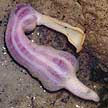

Acorn worm
Phylum Hemichordata
Class Enteropneusta |
|

Spoon worm
Class Echiura
Phylum Annelida |
|
|
| Unsegmented
worm. The worm is seldom seen, but its long coiled cast of mud or
sand is often seen. Sand bars, sandy areas near seagrasses. Commonly
seen on many of our shores. |
5-10cm.
Unsegmented worm. Ridges on body like the texture of a peanut shell.
Soft silty ground, sandy areas, near seagrasses or mangroves. Sometimes
seen on some of our shores. |
5-10cm.
Unsegmented worm. Ridges on body like the texture of a peanut shell.
Soft silty ground, sandy areas, near seagrasses or mangroves. Sometimes
seen on some of our shores. |
About
5cm. Segments not distinct, with long tentacles and a pointed head.
Silty areas near seagrasses. Sometimes seen on our Northern shores.
|
|
|
|
|
|
|
|
| 10-15cm.
Unsegmented worm. White to beige with one blue to black stripe and
two black cross-bars on the head. |
10-15cm.
Unsegmented worm. Uniformly red or orange. |
20-50cm.
Unsegmented worm. Pink or orange, often the head and tail paler with
dark or black tip. |
20-30cm.
Unsegmented worm. Dark striped on upperside, underside plain and white. |
40cm-1m.
Unsegmented worm. White to beige with five blue to black stripes.
On coral rubble. Sometimes seen on some of our shores. |